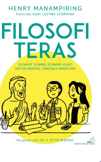
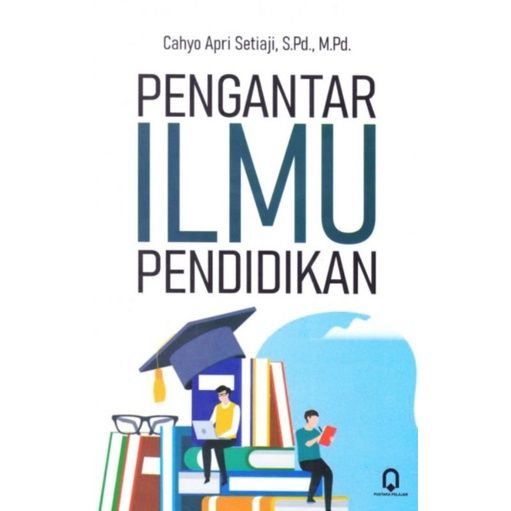
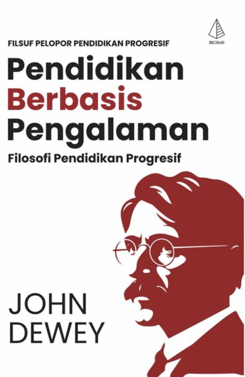
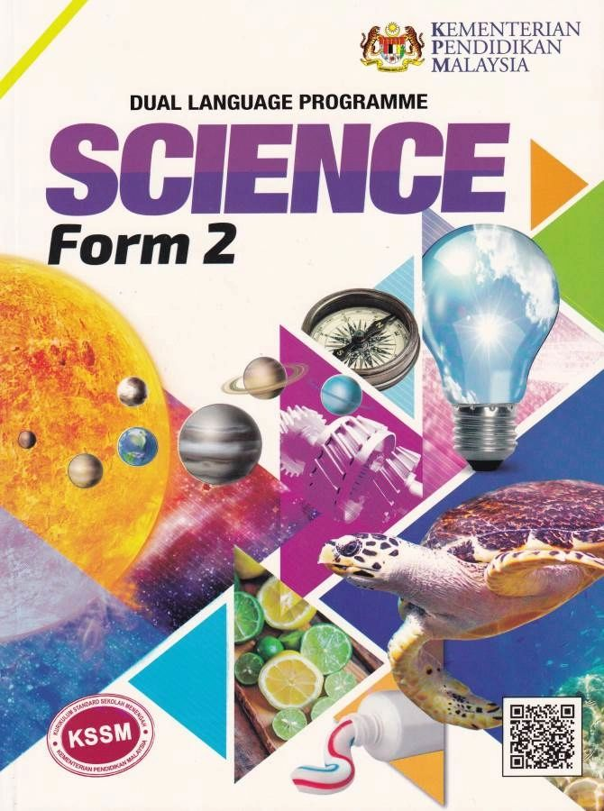

SISTEM DIGITAL
PERPUSTAKAAN
SMKN 1 RONGGA
SISTEM DIGITAL
PERPUSTAKAAN
SMKN 1 RONGGA
👁️
Kategori Buku
📚
Fiksi
4 Buku
Fiksi
4 Buku
🎓
Pendidikan
3 Buku
Pendidikan
3 Buku
📈
Ekonomi
1 Buku
Ekonomi
1 Buku
🔬
Sains
2 Buku
Sains
2 Buku
Buku Populer
Lihat semua

Laskar Pelangi

Dilan 1990

Hujan

Filosofi Teras

Rich Dad Poor Dad

Dongeng Nusantara

Ilmu Pengetahuan

Pendidikan Karakter

Sains & Teknologi

Totto Chan
Koleksi
Semua (0)
Fiksi
Pendidikan
Ekonomi
Sains
Detail Buku
Deskripsi
Buku literasi unggulan yang menyajikan cerita penuh inspirasi, nilai edukatif, serta sangat direkomendasikan untuk pengembangan kompetensi akademik siswa di lingkungan sekolah.
Bahasa
Indonesia
Halaman
272 Halaman
Form Peminjaman
Durasi Peminjaman
3 Hari
7 Hari
14 Hari
Berhasil Dipinjam!
Buku berhasil dipinjam selama .
Rak Buku Saya
Sedang Dipinjam
Riwayat
⚙️
Kembalikan Buku
Apakah kamu yakin ingin mengembalikan buku ini ke perpustakaan sekarang?
Terima Kasih!
Buku sudah dikembalikan dengan aman ke perpustakaan.